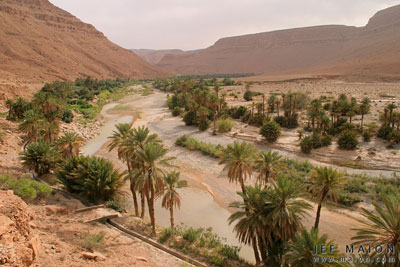

A lo largo del río
We started a new Pro Zone game now and I am glad I was able to join it. I am extremely busy and preparing for exams (if you haven’t heard that yet) and therefor the blog isn’t too active anymore. Though I love to play and the new scenario sounds promising: “a lo largo del río” means along the river, and that is our newest scenario. We are looking a bit for another roleplay game. Because of the lousy technique we are not able to cross the river with trains, but fortunately ferries were invented recently. Three bigger cities established with their neighbors on the other side harbors to transfer goods, passengers and all other fundamental resources required in an rough environment like deserts are. Deserts are dangerous and therefor the builders stick to the river, yes, along the river.

Mountain photos by photographer Jef Maion
Check these pictures and get some impressions. The scenery is just awesome.
Categories: Community News, ProZone, Roleplay
eltor October 23, 2008 16:31
man i so wish i was a member and could play ottd online… once u finish will a savegame be placed i the archives?
Rob October 23, 2008 16:45
Yes, ProZone games are placed in the Archives.
http://www.openttdcoop.org/wiki/ProZone:Archive